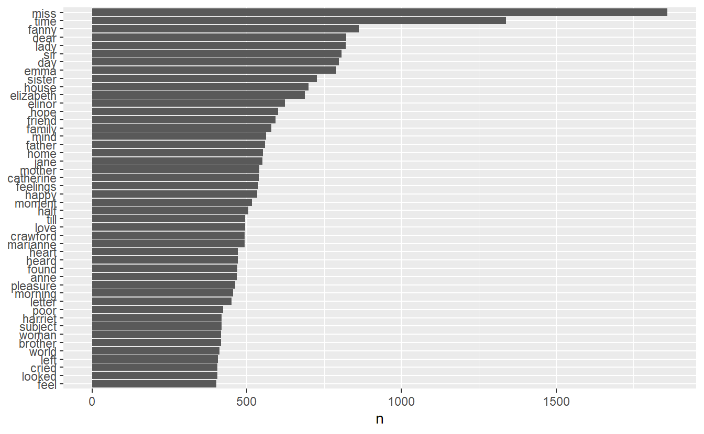
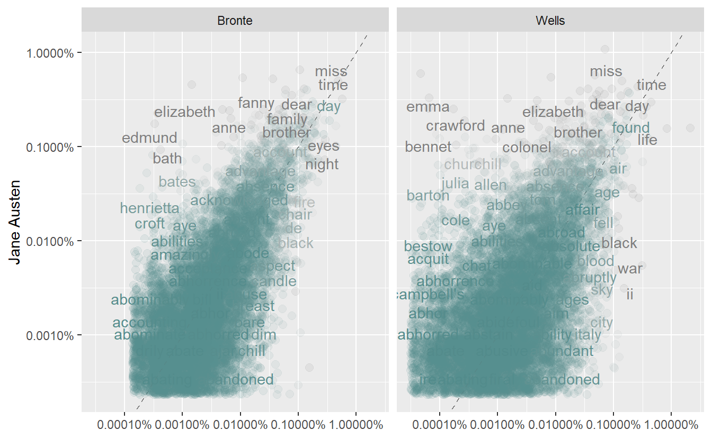

5 Text Mining from STAT 613
Learning Objectives
- Remove stop words and identify frequently used words in a text
- Compare word counts between different groups of text
Resources:
Text Mining with R by Julia Silge and David Robinson.
5.1 Tidy Text Format
This first video corresponds to the online book sections 1.1 - 1.2 which I suggest you read first.
Tidy text format (ttf): A table with one token per row where a token is a meaningful unit of text such as a word, n-gram, sentence or paragraph.
Other text mining tools use:
- strings
- corpus: contain raw strings annotated with metadata
- document-term matrix: sparse matrix with each row containing one document and each column one term or word; entries are generally counts or td-idf (term frequency - inverse document freq)
text <- c("If You Forget Me",
"by Pablo Neruda",
"I want you to know",
"one thing.",
"You know how this is:",
"if I look",
"at the crystal moon, at the red branch",
"of the slow autumn at my window,",
"if I touch",
"near the fire",
"the impalpable ash",
"or the wrinkled body of the log,",
"everything carries me to you,",
"as if everything that exists,",
"aromas, light, metals,",
"were little boats",
"that sail",
"toward those isles of yours that wait for me."
)
text
#> [1] "If You Forget Me"
#> [2] "by Pablo Neruda"
#> [3] "I want you to know"
#> [4] "one thing."
#> [5] "You know how this is:"
#> [6] "if I look"
#> [7] "at the crystal moon, at the red branch"
#> [8] "of the slow autumn at my window,"
#> [9] "if I touch"
#> [10] "near the fire"
#> [11] "the impalpable ash"
#> [12] "or the wrinkled body of the log,"
#> [13] "everything carries me to you,"
#> [14] "as if everything that exists,"
#> [15] "aromas, light, metals,"
#> [16] "were little boats"
#> [17] "that sail"
#> [18] "toward those isles of yours that wait for me."
text_df <- tibble(
line = 1:length(text),
text = text
)
text_df
#> # A tibble: 18 x 2
#> line text
#> <int> <chr>
#> 1 1 If You Forget Me
#> 2 2 by Pablo Neruda
#> 3 3 I want you to know
#> 4 4 one thing.
#> 5 5 You know how this is:
#> 6 6 if I look
#> # ... with 12 more rows
text_df %>%
unnest_tokens(word, text)
#> # A tibble: 80 x 2
#> line word
#> <int> <chr>
#> 1 1 if
#> 2 1 you
#> 3 1 forget
#> 4 1 me
#> 5 2 by
#> 6 2 pablo
#> # ... with 74 more rows
data(stop_words)
text_word_count <- text_df %>%
unnest_tokens(word, text) %>%
anti_join(stop_words) %>% # get rid of uninteresting words
count(word, sort = TRUE) # count of each word left
#> Joining, by = "word"5.2 unnest_tokens() on larger text
Section 1.3 in online book. Then watch this video as you work through this section.
Let’s look at a larger text, say all of Jane Austen’s novels.
orig_books <- austen_books() %>%
group_by(book) %>%
mutate(linenumber = row_number(),
chapter = cumsum(str_detect(text,
regex("^chapter [\\divxlc]",
ignore_case = TRUE)))) %>%
ungroup() %>%
select(chapter, linenumber, everything())
orig_books
#> # A tibble: 73,422 x 4
#> chapter linenumber text book
#> <int> <int> <chr> <fct>
#> 1 0 1 "SENSE AND SENSIBILITY" Sense & Sensibility
#> 2 0 2 "" Sense & Sensibility
#> 3 0 3 "by Jane Austen" Sense & Sensibility
#> 4 0 4 "" Sense & Sensibility
#> 5 0 5 "(1811)" Sense & Sensibility
#> 6 0 6 "" Sense & Sensibility
#> # ... with 73,416 more rows
# make data tidy
tidy_books <- orig_books %>%
unnest_tokens(word, text) %>%
# use str_extract because some gutenberg texts have other symbols around
# the words as part of the encoding
mutate(word = str_extract(word, "[a-z']+")) %>%
anti_join(stop_words)
#> Joining, by = "word"
tidy_books %>%
count(word, sort = TRUE)
#> # A tibble: 13,464 x 2
#> word n
#> * <chr> <int>
#> 1 miss 1860
#> 2 time 1339
#> 3 fanny 862
#> 4 dear 822
#> 5 lady 819
#> 6 sir 807
#> # ... with 13,458 more rows
# visualize
tidy_books %>%
count(word, sort = TRUE) %>%
filter(n > 400) %>%
mutate(word = reorder(word,n)) %>%
ggplot(aes(word, n)) +
geom_col() +
xlab(NULL) +
coord_flip()
5.4 Compare word frequency by author to Austen
Book sections 1.5 - 1.6 and this video
Now let’s graph the frequency comparison of each other author to Jane Austen.
frequency %>% ggplot(aes(x = proportion,
y = `Austen`,
color = abs(`Austen` - proportion))) +
geom_abline(color = "gray40", lty = 2) +
geom_jitter(alpha = 0.1, size = 2.5,
width = 0.3, height = 0.3) +
geom_text(aes(label = word),
check_overlap = TRUE, vjust = 1.5) +
scale_x_log10(labels = percent_format()) +
scale_y_log10(labels = percent_format()) +
scale_color_gradient(limits = c(0, 0.001),
low = "darkslategray4",
high = "gray75") +
facet_wrap(~author, ncol = 2) +
theme(legend.position="none") +
labs(y = "Jane Austen", x = NULL)
#> Warning: Removed 41043 rows containing missing values (geom_point).
#> Warning: Removed 41045 rows containing missing values (geom_text). We can tell that Austen and Bronte are more similar (grouped closer to the line) than Austen and Wells. Let’s use a correlation test to quantify the amounts.
We can tell that Austen and Bronte are more similar (grouped closer to the line) than Austen and Wells. Let’s use a correlation test to quantify the amounts.
df_Bronte <- frequency[frequency$author == "Bronte",]
df_Bronte
#> # A tibble: 28,678 x 4
#> word Austen author proportion
#> <chr> <dbl> <chr> <dbl>
#> 1 a'most NA Bronte 0.0000160
#> 2 a'n't 0.00000462 Bronte NA
#> 3 aback NA Bronte 0.00000400
#> 4 abaht NA Bronte 0.00000400
#> 5 abandon NA Bronte 0.0000320
#> 6 abandoned 0.00000462 Bronte 0.0000920
#> # ... with 28,672 more rows
cor.test(data = df_Bronte, ~ proportion + `Austen`)
#>
#> Pearson's product-moment correlation
#>
#> data: proportion and Austen
#> t = 119, df = 10299, p-value <2e-16
#> alternative hypothesis: true correlation is not equal to 0
#> 95 percent confidence interval:
#> 0.753 0.769
#> sample estimates:
#> cor
#> 0.761
df_Wells <- frequency[frequency$author == "Wells",]
df_Wells
#> # A tibble: 28,678 x 4
#> word Austen author proportion
#> <chr> <dbl> <chr> <dbl>
#> 1 a'most NA Wells NA
#> 2 a'n't 0.00000462 Wells NA
#> 3 aback NA Wells 0.0000150
#> 4 abaht NA Wells NA
#> 5 abandon NA Wells 0.0000150
#> 6 abandoned 0.00000462 Wells 0.000180
#> # ... with 28,672 more rows
cor.test(data = df_Wells, ~ proportion + `Austen`)
#>
#> Pearson's product-moment correlation
#>
#> data: proportion and Austen
#> t = 36, df = 6010, p-value <2e-16
#> alternative hypothesis: true correlation is not equal to 0
#> 95 percent confidence interval:
#> 0.403 0.445
#> sample estimates:
#> cor
#> 0.424- Exercise 1: Repeat the above analysis using all the H.G. Wells and Bronte works that are available on gutenberg.org
You will need to use gutenberg_works(author == “Wells, H. G. (Herbert George)”) to get started. We figured this out by looking at any H.G. Wells book on the gutenberg.org website and then looking at the Bibiliography Record to see how the author is listed there. Similarly, find the Bronte works.
- Exercise 2: Pick three other authors from Gutenberg.org and download their works. Compare the authors. Which two are more alike? Some suggestions if you can’t think of any: Mark Twain, Leo Tolstoy, Charles Dickens.
#> Warning: `filter_()` is deprecated as of dplyr 0.7.0.
#> Please use `filter()` instead.
#> See vignette('programming') for more help
#> This warning is displayed once every 8 hours.
#> Call `lifecycle::last_warnings()` to see where this warning was generated.
#> Warning: `distinct_()` is deprecated as of dplyr 0.7.0.
#> Please use `distinct()` instead.
#> See vignette('programming') for more help
#> This warning is displayed once every 8 hours.
#> Call `lifecycle::last_warnings()` to see where this warning was generated.
#> Joining, by = "word"
#> Joining, by = "word"
#> # A tibble: 61,913 x 4
#> word Austen Bronte Wells
#> <chr> <dbl> <dbl> <dbl>
#> 1 ' NA NA 0.00000126
#> 2 a'ch NA NA 0.000000628
#> 3 a'chitect NA NA 0.00000126
#> 4 a'eplane NA NA 0.000000628
#> 5 a'hm NA NA 0.000000628
#> 6 a'll NA NA 0.00000188
#> # ... with 61,907 more rows
#> # A tibble: 123,826 x 4
#> word Austen author proportion
#> <chr> <dbl> <chr> <dbl>
#> 1 ' NA Bronte NA
#> 2 a'ch NA Bronte NA
#> 3 a'chitect NA Bronte NA
#> 4 a'eplane NA Bronte NA
#> 5 a'hm NA Bronte NA
#> 6 a'll NA Bronte NA
#> # ... with 123,820 more rows
#> Warning: Removed 101057 rows containing missing values (geom_point).
#> Warning: Removed 101059 rows containing missing values (geom_text).
#> # A tibble: 61,913 x 4
#> word Austen author proportion
#> <chr> <dbl> <chr> <dbl>
#> 1 ' NA Bronte NA
#> 2 a'ch NA Bronte NA
#> 3 a'chitect NA Bronte NA
#> 4 a'eplane NA Bronte NA
#> 5 a'hm NA Bronte NA
#> 6 a'll NA Bronte NA
#> # ... with 61,907 more rows
#>
#> Pearson's product-moment correlation
#>
#> data: proportion and Austen
#> t = 119, df = 10914, p-value <2e-16
#> alternative hypothesis: true correlation is not equal to 0
#> 95 percent confidence interval:
#> 0.742 0.758
#> sample estimates:
#> cor
#> 0.75
#> # A tibble: 61,913 x 4
#> word Austen author proportion
#> <chr> <dbl> <chr> <dbl>
#> 1 ' NA Wells 0.00000126
#> 2 a'ch NA Wells 0.000000628
#> 3 a'chitect NA Wells 0.00000126
#> 4 a'eplane NA Wells 0.000000628
#> 5 a'hm NA Wells 0.000000628
#> 6 a'll NA Wells 0.00000188
#> # ... with 61,907 more rows
#>
#> Pearson's product-moment correlation
#>
#> data: proportion and Austen
#> t = 45, df = 11851, p-value <2e-16
#> alternative hypothesis: true correlation is not equal to 0
#> 95 percent confidence interval:
#> 0.365 0.396
#> sample estimates:
#> cor
#> 0.381